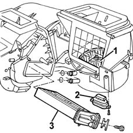
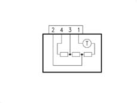
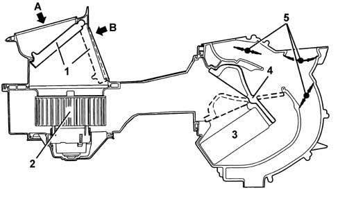

5020A box and components
- Path
- Descriptions > 50 AUXILIARY UNITS > 5020 HEATER > 5020A box and components
- Kind
- system description
- Applies to
- all engines; all production periods
- Interactive page
- https://sloeber94.github.io/elrnDB-fMltpl/en/#/2888275
Applies to: all engines; all production periods
-

1, Fan motor 2, Fan motor resistance 3, Heater radiator
Fan motor
The electric fan which sends the outside or recirculation air towards the duct/distributor receives a 12 V supply and is operated at different speeds by a nearby resistance.
Technical specifications
1. Nominal voltage 12V
2. Maximum current 23A
3. Speed in open air (at 12V, 25°C) 2925 - 3225
Fan motor resistance
A resistive divider operates the fan at different speeds: the device is protected from overheating by a special thermal fuse

Technical specifications
1. speed (section 4-1) 2.50 Ohm
2. speed (section 3-1) 0.75 Ohm
3. speed (section 2-1) 0.25 Ohm
4. speed --
Thermal fuse operating temperature 184°C
Heater radiator
The radiator is a heat exchanger connected to the engine cooling circuit by means of a pipe which takes hot water from the engine to heat the air which is sent to the passenger compartment.
It consists of aluminium fins and pipes with a galvanized steel manifold.
The fan directs the flow of outside air (A) towards the interior of the vehicle.
If the recirculation function is activated, the special flap directs the flow of air from the inside of the pasenger compartment (B).
The flow of air then partly or totally envelops the heater radiator, depending on the position of the mixture flap.
Lastly, the air is sent to the various vents depending on the position of the upper, centre and lower distribution flaps.
All the flaps are operated mechanically by means of bowden cables.

1, Outside air exclusion flap (recirculation) 2, Electric fan 3 Heater radiator 4, Mixture flap 5, Distribution flaps A, Outside air flow B, Inside air flow